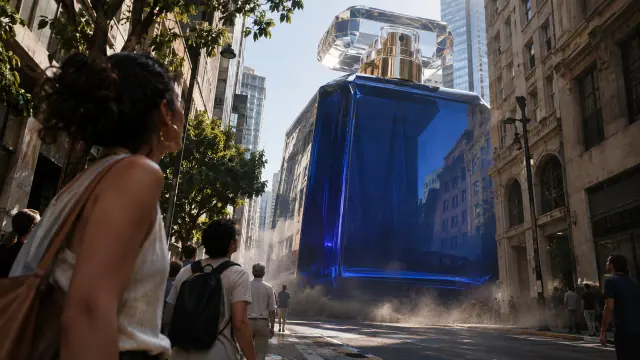
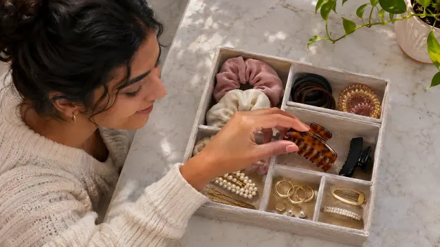

Estas amostras fazem parte da biblioteca de 500 prompts de vídeo. A geração acontece na sua ferramenta de IA, com créditos contratados separadamente.

FOOH · AMOSTRA REAL
Produto atravessando a cidade
Um produto gigante atravessa lentamente a cidade, com reflexos e sombras integrados à rua.
Até 15s9:16Prompt em inglês
Referência para gerar: Foto nítida do produto, incluindo embalagem e proporções.
Teste com um produto que você já tem.
Anexe uma foto nítida de uma lata, caixa, frasco ou outro produto na sua IA de vídeo e cole o prompt abaixo. A cena não depende de marca ou cidade específicas.
PROMPT ORIGINAL DA BIBLIOTECA
CRIA / VIDEO DIRECTION — PRODUTO ATRAVESSANDO A CIDADE
DELIVERY
15-second finished video, 9:16, 24fps delivery unless the sequence explicitly calls for time-lapse or slow motion. Timings describe the finished edit. If the selected generator supports shorter clips, generate each timed shot separately with the same references, then assemble the edit; do not cram the full narrative into one unsupported generation.
FRAME COMPOSITION: Native vertical 9:16 video. Compose every shot for the portrait frame, keeping the subject and essential action inside the central safe area with clear space above and below. Reframe lateral reveals and groups for vertical readability; no horizontal canvas, pillarboxing or letterboxing.
REFERENCES
@image1 = Produto. Foto nítida do produto, incluindo embalagem e proporções.
Preserve reference identity, proportions, colors and materials, except for the one intentional effect explicitly described in the sequence. If the generator uses attachment slots instead of @image tokens, attach the same references in that order.
DIRECTION & CINEMATOGRAPHY
32mm grounded tracking, consistent afternoon sun; replace the long aerial descent with an immediate street-level setup.
ARRI Alexa 35 visual language for normal-speed live action: organic highlight roll-off, natural skin and material texture, restrained sharpening, believable motion blur and controlled contrast. A named camera is an aesthetic reference, not a promise of actual capture. Use a dedicated high-speed-imaging look for slow-motion inserts rather than attributing unsupported frame rates to Alexa.
SEQUENCE
[0–4s] A street-level wide already shows the giant reference product approaching through a broad empty urban corridor.
[4–10s] Track a short section of its slow passage between buildings; reflections, shadow and nearby air displacement follow the same direction.
[10–15s] The product stops at the clear intersection and the camera ends on a stable low-angle hero with people on distant sidewalks for scale.
VFX & CONTINUITY
Houdini-level finish where effects are needed: stable camera tracking, correct occlusion, grounded contact, coherent light direction, reflections and shadows. Couple rigid bodies, cloth, particles, smoke and fluids only when the scene calls for them. Respect mass, momentum and material response around the explicitly fictional event. Do not apply generic glow to every object.
AUDIO
Low product-movement rumble, displaced air and distant city traffic.
NO VOCAL CONTENT: No dialogue, narration, voice-over, background speech, crowd voices, singing or vocal reactions. Use only the stated non-vocal environmental ambience and sound effects. If audio is unsupported, produce only those effects separately in post. Do not add a spoken language or spoken line.
FINISH & RESTRICTIONS
Keep subject count, spatial geography, light direction and object ownership consistent. No identity drift, extra fingers, duplicate objects, intersecting surfaces, unmotivated morphs, watermark or burned-in subtitles. Exact lettering, interfaces and planned overlays are composited in post rather than hallucinated by the video model. Preserve any intentional text-based story device in the edit.
A capa é uma referência visual de um frame. Use o prompt na sua ferramenta de IA, com as referências indicadas. O resultado depende do modelo e dos ajustes.

UGC · AMOSTRA REAL
UGC — solução para a gaveta perdida
Uma criadora encontra um acessório num organizador aberto, com o produto visível sobre a bancada.
Até 15s9:16Prompt em inglês
Referência para gerar: Foto nítida do produto real e da embalagem; inclua os componentes usados na cena.
PROMPT ORIGINAL DA BIBLIOTECA
CRIA / VIDEO DIRECTION — UGC — SOLUÇÃO PARA A GAVETA PERDIDA
DELIVERY
15-second finished video, 9:16, 24fps delivery. Hard maximum duration: 15 seconds. Timings refer to the finished edit, not recording frame rate. Keep actions readable at natural speed; use explicit cuts for different angles or compressed time. If a tool supports only shorter clips, generate matched shots and assemble them within the stated total duration.
FRAME COMPOSITION: Native vertical 9:16 video. Compose every shot for the portrait frame, keeping the subject and essential action inside the central safe area with clear space above and below. Reframe lateral reveals and groups for vertical readability; no horizontal canvas, pillarboxing or letterboxing.
REFERENCES
@image1 = Produto. Foto nítida do produto real e da embalagem; inclua os componentes usados na cena.
Preserve reference identity, proportions, colors and materials, except for the one intentional effect explicitly described in the sequence. If the generator uses attachment slots instead of @image tokens, attach the same references in that order.
BRAND ADAPTATION: Use the actual supplied product and permitted function. Adapt the set palette, styling and verified campaign copy to the brand. Exact packaging graphics, prices, dates and offer text are composited in post when necessary; do not invent product variants, features or results.
DIRECTION & CINEMATOGRAPHY
Fixed smartphone overhead, window light; preserve all object counts and show the organizer's real compartment sizes.
Authentic smartphone visual language, 24fps delivery, natural exposure and white balance. Keep real skin texture and modest handheld imperfections; do not add cinematic camera movement that contradicts the creator-led setup.
SEQUENCE
[0–4s] Start with an overhead phone shot of one cluttered drawer and the creator briefly searching for a small everyday accessory.
[4–10s] A direct cut shows the same objects placed into the actual reference organizer; the creator retrieves the accessory in one clear movement.
[10–15s] Hold the open organizer and say in Brazilian Portuguese: "Agora eu sei onde está." Keep this a staged demonstration, not a claimed customer history.
VFX & CONTINUITY
Keep hand/object contact, anatomy, reflections and environmental interaction coherent. Any cleanup or compositing must preserve the observational feel; no floating contact points, duplicated limbs, unstable faces or textures crawling between frames.
Each contact must have a clear approach and settling phase. Preserve geography through direct cuts; do not turn editing time compression into impossible real-time travel.
AUDIO
Drawer slide, small object contact and the specified short spoken line; no music required.
Any specified speech is Brazilian Portuguese. If audio is unsupported, create the stated Foley and dialogue separately in post; never extend the final video past 15 seconds to fit speech.
FINISH & RESTRICTIONS
Keep subject count, spatial geography, light direction and object ownership consistent. No identity drift, extra fingers, duplicate objects, intersecting surfaces, unmotivated morphs, watermark or burned-in subtitles. Exact lettering, interfaces and planned overlays are composited in post rather than hallucinated by the video model. Preserve any intentional text-based story device in the edit. Demonstrate only the actual product function. Populate editable claims and results with verified information; the generated example is a creative reference, not evidence of a real test or testimonial.
A capa é uma referência visual de um frame. Use o prompt na sua ferramenta de IA, com as referências indicadas. O resultado depende do modelo e dos ajustes.
Comerciais de produto · AMOSTRA REAL
Perfume — sombra em movimento
Um perfume sobre pedra, sombra de uma folha atravessando o frasco.
Até 15s9:16Prompt em inglês
Referência para gerar: Foto nítida do produto e de sua embalagem real.
PROMPT ORIGINAL DA BIBLIOTECA
CRIA / VIDEO DIRECTION — PERFUME — SOMBRA EM MOVIMENTO
DELIVERY
15-second finished video, 9:16, 24fps delivery. The timing describes the final edit; use separate matched clips when the selected generator has a shorter duration limit. Time-lapse compresses the stated real-world interval; slow motion is a dedicated high-speed-imaging treatment.
FRAME COMPOSITION: Native vertical 9:16 video. Compose every shot for the portrait frame, keeping the subject and essential action inside the central safe area with clear space above and below. Reframe lateral reveals and groups for vertical readability; no horizontal canvas, pillarboxing or letterboxing.
REFERENCES
@image1 = Produto. Foto nítida do produto e de sua embalagem real.
Preserve reference identity, proportions, colors and materials, except for the one intentional effect explicitly described in the sequence. If the generator uses attachment slots instead of @image tokens, attach the same references in that order.
DIRECTION & CINEMATOGRAPHY
ARRI Alexa 35 look, 75mm, hard sunlight-style source through a real leaf, restrained cool fill and accurate glass caustics.
ARRI Alexa 35 visual language for normal-speed live action: organic highlight roll-off, natural skin and material texture, restrained sharpening, believable motion blur and controlled contrast. A named camera is an aesthetic reference, not a promise of actual capture. Use a dedicated high-speed-imaging look for slow-motion inserts rather than attributing unsupported frame rates to Alexa.
SEQUENCE
[0–4s] The product stands still in a deep charcoal studio; a leaf shadow begins outside its silhouette.
[4–10s] A physical leaf moves slowly through the key light, casting a changing shadow across the bottle while its glass remains optically clear.
[10–15s] The shadow clears the front label and the camera finishes a short lateral slide into the hero composition.
VFX & CONTINUITY
Houdini-level finish where effects are needed: stable camera tracking, correct occlusion, grounded contact, coherent light direction, reflections and shadows. Couple rigid bodies, cloth, particles, smoke and fluids only when the scene calls for them. Respect mass, momentum and material response around the explicitly fictional event. Do not apply generic glow to every object.
Give each action time to begin, make contact and settle. Use direct cuts for an explicitly different angle or compressed time; keep a continuous shot only where the camera path and geography permit it.
AUDIO
Quiet studio air and faint foliage movement; no music.
Dialogue is Brazilian Portuguese only where a spoken line is specified. Keep each line within its shot duration. If sound is unsupported by the chosen tool, produce the stated Foley and dialogue separately in post.
FINISH & RESTRICTIONS
Keep subject count, spatial geography, light direction and object ownership consistent. No identity drift, extra fingers, duplicate objects, intersecting surfaces, unmotivated morphs, watermark or burned-in subtitles. Exact lettering, interfaces and planned overlays are composited in post rather than hallucinated by the video model. Preserve any intentional text-based story device in the edit.
A capa é uma referência visual de um frame. Use o prompt na sua ferramenta de IA, com as referências indicadas. O resultado depende do modelo e dos ajustes.
Packshots & loops · AMOSTRA REAL
Loop — cáusticas na cerâmica
Um frasco de cosmético permanece imóvel enquanto reflexos de água percorrem uma base de cerâmica.
Até 8s9:16Prompt em inglês
Referência para gerar: Foto nítida do produto real e da embalagem; inclua os componentes usados na cena.
PROMPT ORIGINAL DA BIBLIOTECA
CRIA / VIDEO DIRECTION — LOOP — CÁUSTICAS NA CERÂMICA
DELIVERY
8-second seamless loop, 9:16, 24fps delivery. Hard maximum duration: 15 seconds. Timings refer to the finished edit, not recording frame rate. Keep actions readable at natural speed; use explicit cuts for different angles or compressed time. If a tool supports only shorter clips, generate matched shots and assemble them within the stated total duration.
FRAME COMPOSITION: Native vertical 9:16 video. Compose every shot for the portrait frame, keeping the subject and essential action inside the central safe area with clear space above and below. Reframe lateral reveals and groups for vertical readability; no horizontal canvas, pillarboxing or letterboxing.
REFERENCES
@image1 = Produto. Foto nítida do produto real e da embalagem; inclua os componentes usados na cena.
Preserve reference identity, proportions, colors and materials, except for the one intentional effect explicitly described in the sequence. If the generator uses attachment slots instead of @image tokens, attach the same references in that order.
BRAND ADAPTATION: Use the actual supplied product and permitted function. Adapt the set palette, styling and verified campaign copy to the brand. Exact packaging graphics, prices, dates and offer text are composited in post when necessary; do not invent product variants, features or results.
DIRECTION & CINEMATOGRAPHY
85mm locked studio camera, soft key plus one controlled caustic source; one eight-second seamless cycle.
ARRI Alexa 35 visual language for normal-speed live action: organic highlight roll-off, natural skin and material texture, restrained sharpening, believable motion blur and controlled contrast. A named camera is an aesthetic reference, not a promise of actual capture. Use a dedicated high-speed-imaging look for slow-motion inserts rather than attributing unsupported frame rates to Alexa.
SEQUENCE
[0–8s] Lock the reference product on a matte ceramic base, centered and label facing forward.
Over one eight-second period, a motorized rippled glass gobo rotates a full turn above the light, creating periodic caustics around the product.
Return exactly to the initial gobo angle and light phase; the product never rotates or crossfades.
VFX & CONTINUITY
Houdini-level finish where effects are needed: stable camera tracking, correct occlusion, grounded contact, coherent light direction, reflections and shadows. Couple rigid bodies, cloth, particles, smoke and fluids only when the scene calls for them. Respect mass, momentum and material response around the explicitly fictional event. Do not apply generic glow to every object.
Match camera, light, position and velocity at the cycle boundary. Deliver one period without a duplicated final frame. Do not conceal a seam with a product crossfade.
AUDIO
Silent loop.
Keep the entire loop silent.
FINISH & RESTRICTIONS
Keep subject count, spatial geography, light direction and object ownership consistent. No identity drift, extra fingers, duplicate objects, intersecting surfaces, unmotivated morphs, watermark or burned-in subtitles. Exact lettering, interfaces and planned overlays are composited in post rather than hallucinated by the video model. Preserve any intentional text-based story device in the edit.
A capa é uma referência visual de um frame. Use o prompt na sua ferramenta de IA, com as referências indicadas. O resultado depende do modelo e dos ajustes.